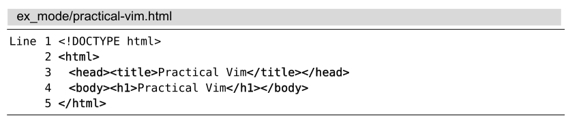
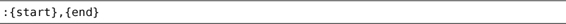
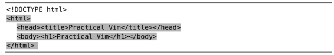
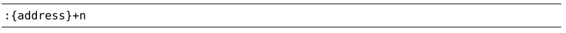

技巧28在一行或多个连续行上执行命令
很多 Ex 命令可以用[range]指定要操作的范围。我们可以用行号、位置标记或是查找模式来指定范围的开始位置及结束位置。
Ex命令的优点之一是它们可以在某一范围内的所有行上执行。我们以下面这个简短的HTML文本作为示例：

我们将使用:print命令作为演示。这条命令只是简单地在Vim命令行下方回显指定行的内容，它不产生什么实际影响，不过可以用它来说明一个范围由哪些行构成。当然，你可以试着把以下示例中的:print换成诸如:delete、:join、:substitute 或:normal这样的命令，这样就能真切地感受到 Ex 命令是多么有用。
用行号作为地址
如果输入一条只包含数字的Ex命令，那么 Vim 会把这个数字解析成一个地址，并把光标移动到该数字所指定的行上。例如，运行下面的命令将跳到文件的首行：
➾:1
《 1 <!DOCTYPE html>
此文件只包含5行内容，如果要跳到文件的末尾，既可以输入:5，也可以用特殊符号$：
➾:$
➾:p
《 5 </html>
我们在这里使用的是:p，它是:print命令的简写。实际上，用不着分开执行这两条命令，可以像下面这样把这两条命令合成一条：
➾:3p
《 3 <head><title>Practical Vim</title></head>
此命令会把光标移到第3行，然后显示该行的内容。记住，这里用:p 命令的目的只是为了进行讲解。如果你执行的是:3d 命令，那么只需一条命令就可以跳到第3行并删除此行；而与之等效的普通模式命令，则要先执行3G，再跟着执行dd。因此，从这个例子就可以看出，Ex命令执行得要比普通模式命令更快。
用地址指定一个范围
迄今为止，地址只是被当成一个单独的行号，不过我们也可以用它来指定一个范围，如下例所示：
➾:2,5p
《 2 <html>
3 <head><title>Practical Vim</title></head>
4 <body><h1>Practical Vim</h1></body>
5 </html>
此例会打印从第2行到第5行之间的每一行的内容（含第2行及第5行）。注意，运行完这条命令后，光标将停留在第5行。通常，一个范围具有如下的形式：

需注意的是{start}和{end}都是地址。到目前为止，我们已经看到过用行号作为地址，然而很快就会看到也能用查找模式或是位置标记作为地址。
符号.代表当前行的地址。因此，我们可以很容易地写出一个范围，用以代表从当前位置到文件末尾间的所有行：
➾:2
➾:.,$p
《 2 <html>
3 <head><title>Practical Vim</title></head>
4 <body><h1>Practical Vim</h1></body>
5 </html>
符号%也有特殊含义，它代表当前文件中的所有行：
➾:%p
《 1 <!DOCTYPE html>
2 <html>
3 <head><title>Practical Vim</title></head>
4 <body><h1>Practical Vim</h1></body>
5 </html>
这和运行:1, $p是等效的。这种简写形式在和:substitute命令一起使用时非常普遍：
➾:%s/Practical/Pragmatic/
上述命令让 Vim 把每行内的第一个“Practical”替换为“Pragmatic”，我们将在第14章学习关于此命令的更多内容。
用高亮选区指定范围
我们也可以用高亮选区选定一个范围，而不是用数字指定。如果我们先执行2G，再跟着执行VG，就会选中如下一个高亮选区：

如果现在按下:键，命令行上就会预先填充一个范围:'<,'>。这个范围看起来有点晦涩难懂，不过你可以简单地把它理解为一个代表高亮选区的范围。接下来我们就可以输入一条 Ex 命令，使它在每个被选中的行上执行：
➾:'<,'>p
《 2 <html>
3 <head><title>Practical Vim</title></head>
4 <body><h1>Practical Vim</h1></body>
5 </html>
如果只是想对文件的部分内容执行:substitute命令，用这种方式定义范围会很方便。
符号'<是代表高亮选区首行的位置标记，而'>则代表高亮选区的最后一行（更多关于位置标记的内容，请参见技巧53），这些位置标记即使在退出可视模式后仍然存在。如果你尝试在普通模式下直接运行:'<,'>p，它会始终回显上一次高亮选区所选中的内容。
用模式指定范围
Vim 也接受以模式作为一条 Ex 命令的地址，如下所示：
➾:/<html>/,/<\/html>/p
《 2 <html>
3 <head><title>Practical Vim</title></head>
4 <body><h1>Practical Vim</h1></body>
5 </html>
这个范围看起来比较复杂，但实际上它符合范围的一般形式:{start},{end}。在本例中，{start}地址是模式/<html>/，而{end}地址是/<\/html>/。换句话说，这个范围由<html>开标签所在的行开始，到对应闭标签所在的行结束。
在此例中，用地址:2,5也可以获得同样的结果，并且这种表示方式更简洁，不过它也更不可靠。用模式指定范围的话，我们的命令总是对整个<html></html>范围进行操作，无论这个范围包含多少行都没问题。
用偏移对地址进行修正
假设我们想对位于<html></html>之间的每一行都运行一条 Ex 命令，但是不想包括<html>及</html>标签所在的行，那么可以为之加上偏移：
➾:/<html>/+1,/<\/html>/-1p
《 3 <head><title>Practical Vim</title></head>
4 <body><h1>Practical Vim</h1></body>
偏移的一般形式是这样的：

如果 n 被省略，那么缺省偏移量为1。{address}可以是一个行号、一个位置标记，或是一个查找模式。
假设我们想对由当前行开始的特定几行执行一条命令，那么可以使用相对于当前行的偏移：
➾:2
➾:.,.+3p
符号.代表当前行，所以上例中的:.,.+3 相当于:2,5。
结论
定义范围的语法非常灵活，既可以混合搭配行号、位置标记以及查找模式，也可以对它们加以偏移。下表对用来构建 Ex 命令的地址及范围的符号进行了总结：
| 符号 | 地址 |
| 1 | 文件的第一行 |
| $ | 文件的最后一行 |
| 0 | 虚拟行，位于文件第一行上方 |
| . | 光标所在行 |
| 'm | 包含位置标记m的行 |
| '< | 高亮选区的起始行 |
| '> | 高亮选区的结束行 |
| % | 整个文件（:1,$ 的简写形式） |
第0行在文件中并不真实存在，但它作为一个地址，在某些特定场景下会很有用处。特别是，在把指定范围内的行复制或移动到文件开头时，可以用它做:copy {address}及:move {address}命令的最后一个参数。我们将在接下来两个技巧中看到这两条命令的应用实例。
在定义一个[range]时，它总是代表一系列连续行，不过:global 命令也可以在一系列非连续行上执行Ex命令，我们将在第15章学习这方面的更多知识。